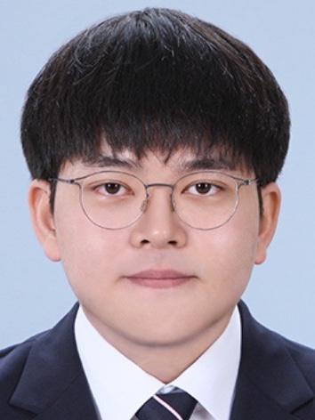

Yoonho Lee 이윤호
Ph.D. Student · Graduate School of Data Science, KAIST
Hi! I am a Ph.D. student at the Graduate School of Data Science, KAIST, advised by Prof. Chanyoung Park. My research focuses on AI for nucleic acid therapeutics — in particular virtual cells, drug delivery systems, drug design, and RNA/DNA therapeutics. Methodologically, I specialize in graph neural networks, geometric deep learning, and categorical deep learning.
Before my Ph.D., I received my M.S. from the Graduate School of AI at KAIST, where I worked on graph neural networks and category theory for deep learning, and my B.S. from KAIST with a double major in Computing and Electrical Engineering.
News
- 2026Two papers (LNP screening and scTrilemma) are accepted to NeurIPS 2026.
- 2026Selected as a Top Reviewer at NeurIPS 2026.
- 2026Co-organizing the MM4SciReal workshop (Multimodal AI for Science and the Real World) at ACCV 2026.
- 2026Presented Screening Lipid Nanoparticles through Structure-Ratio Alignment at the KSC 2026 Top Conference Session.
- 2025One first-author paper on hyperedge disentanglement via category theory is accepted to NeurIPS 2025.
- 2025Subgraph Federated Learning for Local Generalization is accepted to ICLR 2025 as an Oral (top 1.8%).
- 2025.03Started my Ph.D. at the Graduate School of Data Science, KAIST.
- 2024Received the Best Paper Award at the KDD 2024 FedKDD Workshop.
- 2024One paper is accepted to KDD 2024.
Publications
* equal contribution · See also Google Scholar.
Education
-
Ph.D. in Data Science, KAISTMar 2025 – PresentGraduate School of Data Science · Advisor: Prof. Chanyoung ParkVirtual cell, drug delivery system, drug design
-
M.S. in Artificial Intelligence, KAISTMar 2023 – Feb 2025Graduate School of AI · Advisor: Prof. Chanyoung ParkGraph neural networks, categorical deep learning, category theory
-
B.S., KAISTMar 2017 – Feb 2023School of Computing & Electrical Engineering (double major)
Projects & Teaching
- 2025 –Development of a Scalable AI Reasoning Model for Knowledge System Expansion and Biomedical Applications
- 2024Circuit Recognition for Similar Circuit Search in Design Database, SK hynix
- 2024Teaching Assistant, DS535: Recommender System and Graph Machine Learning, KAIST
Talks
- 2026Screening Lipid Nanoparticles through Structure-Ratio Alignment — Top Conference Session, Korea Software Congress (KSC)
- 2025Disentangling Hyperedges through the Lens of Category Theory — Top Conference Session, Korea Software Congress (KSC)
Honors & Awards
- 2026Top Reviewer, NeurIPS 2026
- 2024Best Paper Award, KDD 2024 Workshop on Federated Learning for Data Mining and Graph Analytics (FedKDD), Barcelona, Spain
- 2021KAIST IE Frontier, Third Prize — Development and Expansion of a Multimodal Data-Based Product Category Classification System
Academic Service
- Workshop Organizer: MM4SciReal — Multimodal AI for Science and the Real World (ACCV 2026)
- Program Committee: AAAI (2026–2027), CIKM (2025–2026)
- Conference Reviewer: NeurIPS (2025–2026), ICLR (2025–2027), ICML (2026), LoG (2025), KDD (2024, 2026)
- Workshop Reviewer: MLGenX (2025–2026), GenBio (2025), AI4D3 (2025), AI4Science (2025–2026), AIDrugX (2024), Gen² (2026)